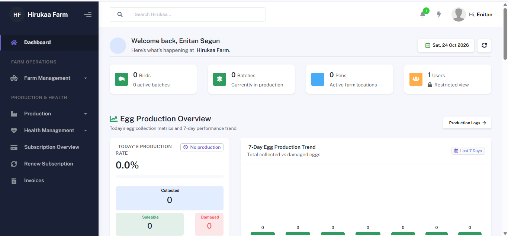
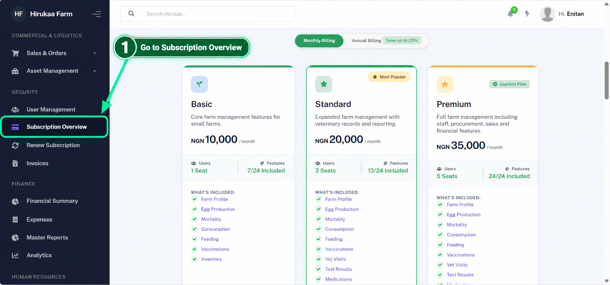
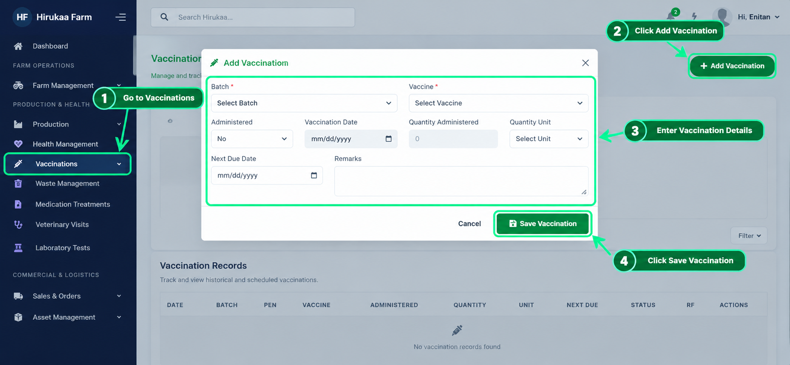
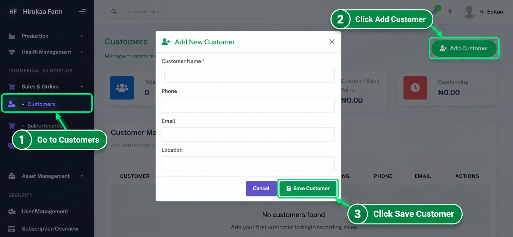
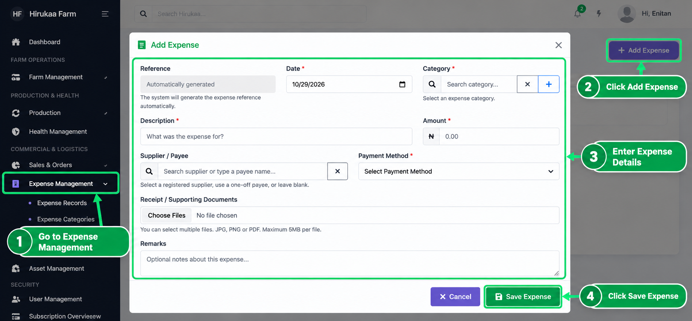
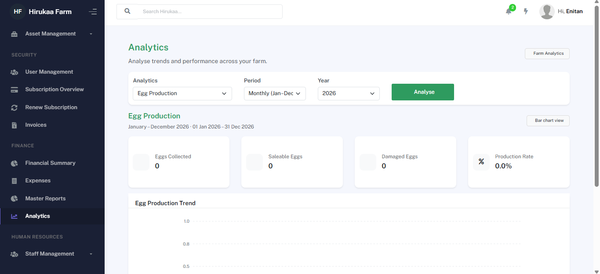
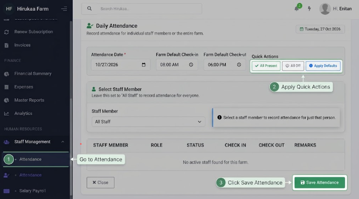

What is Hirukaa?
Hirukaa is a central workspace for recording what happens on a farm and turning those records into a clearer operational and financial picture. The platform is designed so farm owners and authorised team members can work from the same farm data while access remains controlled by the farm's users, roles, permissions and subscription.
The Signup and the login buttton are the basic ways to access the application , sign up if you are a new user , login if already have an account

Step-by-Step Account Creation
Fill in your first name, last name, email address, secure password, and your farm's name in the designated fields.
Choose the specific category that matches your farm operations from the dropdown menu.
Click the Create Farm Account button at the bottom to submit your information and start your 30-day freemium access.
Step-by-Step Sign In
Type in the email address associated with your registered Hirukaa farm account.
Input your account password in the Password field.
Click the green Sign In button to authenticate and access your farm management portal dashboard.
Start with your farm profile and team, create your active batches, then record operations as they happen. The quality of your dashboard, reports and analytics depends on consistent daily records.
Getting started
The first step is to establish the farm workspace that will contain your operational records. Once your farm is selected, Hirukaa keeps the farm's records separated from other farms on the platform.

Dashboard Navigation & Overview
The Dashboard is the central hub for monitoring farm activity, flock statistics, and daily egg production metrics at a glance.
Access all core farm management modules including Farm Management, Production, Health Management, and Subscription Overview from the left sidebar panel.
View high-level summary cards showing total Birds, active Batches, active farm Pens, and registered Users in real-time.
Track today's collection statistics—including total Collected, Saleable, and Damaged eggs—alongside a 7-day performance trend chart.
Set up your farm
Add the farm information your team needs, including its identity, regional settings, and operational rules.

Step-by-Step: Setting Up Your Farm Profile
From the left sidebar under FARM OPERATIONS, click on Farm Management and select Farm Profile.
On the top-right corner of the Farm Profile page, click the green Edit Farm Profile button.
Fill in your Farm Information & Contact, Location Details, Regional & Attendance Settings (currency, timezone, check-in/out times), and upload your Farm Branding / Logo.
Click the green Save Changes button at the bottom right to apply your updated profile information.
Invite your team
Create or assign users and use roles and permissions to control which areas each person can access.
Choose your plan
Your subscription controls the number of user licences and the features available to the farm.

Step-by-Step: Managing Subscriptions & Billing
On the left sidebar navigation menu, click on Subscription Overview or Renew Subscription under the account section.
Choose between available tier plans and select your preferred billing interval (e.g., Monthly or Annual).
Verify that your selected plan includes the required user seat capacities and feature modules needed for your farm crew.
Confirm the subscription request to generate your payment invoice, complete processing, and instantly activate your plan features.
Start recording
Create batches and begin capturing production, feed, health, sales and financial activity.
Add your Hirukaa onboarding video here. Replace this panel with a YouTube/Vimeo iframe or an HTML5 video when your training video is ready.
Farm & batch management
Batches are the operational foundation for flock tracking. A batch records information such as the batch code, bird type, breed, arrival date, initial quantity, current quantity, status and remarks.
Typical workflow
Navigate to Farm Management on the left sidebar and click Bird Inventory to open the batch overview screen.
Input the Batch Name, choose the Species and Bird Type, add the starting Number of Birds, and specify the Farm Location / Pen.
Verify or fill in the Acquisition Date, Start / Placement Date, and expected endpoints, ensuring the batch status is set to Active.
Check your inputs, write any necessary additional batch notes, and click the green Create Batch button at the bottom right to register the flock.
Egg production, mortality and feed consumption can be associated with a batch. Keeping the batch selected correctly makes downstream reporting much more useful.
Show how to create a batch, review batch details and follow the batch through its operational life.
Egg production
The egg production module is used to record daily collection and provide the data used for production monitoring. Records can capture laying birds, eggs collected, damaged eggs, saleable eggs, crates, loose eggs, production rate and breakage rate.
Daily collection
Record the date, collection time and quantity collected for the selected batch.
Saleable vs damaged
Separate usable eggs from damaged eggs so production quality can be monitored.
Production rate
Use laying bird numbers and egg output to understand production performance.
Trend analysis
Use dashboard charts and analytics to compare production across days and periods.

Daily Production Workflow
On the left sidebar menu, expand Production and click on Egg Production to open the operational panel.
Click the green + Record Egg Production button located in the upper-right corner of the production overview.
Select the Production Date, Collection Time, and matching active Layer Batch. Input your counts for Eggs Collected and any Damaged / Cracked Eggs, adding remarks if necessary.
Review the numbers and click the green Record Production button inside the modal to instantly update your inventory and metrics.
Record production on the day it occurs rather than entering several days at once. This gives trends and operational alerts a more accurate picture.
Feed & inventory
Feed management combines stock records with consumption records. The inventory side records purchased stock and remaining quantities, while feed consumption records how much feed was given and actually consumed.
Feed inventory
Record feed type, quantity purchased, remaining quantity, supplier, cost per kilogram, total cost and purchase date.

On the left sidebar under PRODUCTION & HEALTH, expand Production and click on Feed Inventory to view current stock.
Click the green button to add a new stock entry, filling in required fields such as Feed Name, Quantity Purchased, Unit Price, and Supplier.
The inventory list displays Remaining Quantity, Total Cost, and Purchase Date, allowing for accurate low-stock management.
Feed consumption
Record the relevant batch, feed type, birds alive, feed given, leftover and actual consumed quantity. Hirukaa can use these values to present feed-per-bird and efficiency information.

Select Feed Consumption from the sidebar menu (under the Production section) to log daily usage.
Create a new entry by selecting the active Batch, Feed Type, entering the number of Birds Alive, and inputting Feed Given (and any leftover amount).
Hirukaa calculates the Actual Consumed amount, providing data for feed-per-bird and overall production efficiency metrics.
Stock visibility
Know what feed you have remaining before the next purchase is needed.
Consumption visibility
Compare feed use with flock size and operational performance.
Mortality & vaccination
Hirukaa provides comprehensive health tracking tools split across mortality records, vaccination logs, and a centralized vaccine catalogue to keep your flock protected and fully accounted for.

1. Mortality tracking
Record the affected batch, mortality date, quantity, reason, action taken, remarks and status. These records help explain changes in flock size and support mortality reporting.
2. Vaccination logs
Record the batch, vaccine, vaccination date, administered status, quantity administered, unit, next due date and remarks.
3. Vaccine catalogue
Maintain a centralized directory of available vaccines, standard dosages, and treatment types utilized across different farm batches.
Navigate to Health Management on the sidebar and select Bird Mortality to record any flock losses, causes, and remedial actions.
Log vaccine applications by selecting the target batch, checking administration quantities, and setting follow-up reminder dates.
Set up and update available vaccine types, ensuring standardized treatment options are readily available for farm staff.
Use the vaccination records and next due dates to keep upcoming health activities visible to the team.
Sales & customers
Sales records capture commercial activity, customer information, payment status and outstanding balances. This creates a clearer view of what has been sold and what is still owed.
Customers
Maintain customer records so sales can be associated with the correct customer.
Sales
Record the sale date, customer, value, payment information and relevant product details.
Outstanding balances
Use amount paid and outstanding information to understand receivables.
Sales reporting
Use reports and financial summaries to review revenue and cash collected.
1. Customer management
Set up and maintain customer profiles to track purchase history, contact details, and account balances.

Under COMMERCIAL on the left sidebar, navigate to Sales & Customers and select Customers.
Click to create a new profile, entering contact details, address, and default payment terms for accurate credit tracking.
2. Recording sales
Log transactions with specific quantities, pricing, customer linkages, and real-time payment status.

Select Sales Records from the menu and click the button to log a new commercial transaction.
Choose the customer, select items (e.g., egg crates, birds), enter quantity, amount paid, and specify payment status.
Confirm the transaction to instantly update inventory balances, ledger entries, and customer outstanding totals.
3. Price list setup
Configure default product pricing, unit metrics, and tier rates for eggs, birds, manure, and farm byproducts.

Navigate to the Price List tab to view current selling prices across all farm offerings.
Update or add new prices per unit (e.g., per crate, per kg, per head) to ensure quick, consistent billing during sales entry.
Expenses & procurement
Expenses provide the farm's spending record. Procurement supports purchasing workflows, suppliers and purchase orders, while linked expense records provide the accounting source for spending summaries.
Expenses management
Capture the date, category, supplier, description, amount, payment method and supporting remarks.

Navigate to the finance section to log, categorize, and track all operational expenditures seamlessly.
Attach payment methods, suppliers, and transaction remarks to keep financial records audit-ready.
Procurement
Manage suppliers, purchase requests and purchase orders, including order totals, delivery costs, discounts, tax, payments and balances.
Hirukaa's financial reporting should avoid double-counting procurement or salary records where the corresponding expense record already represents the cost.
Reports & analytics
Reports are designed for filtered, exportable operational information, while analytics are designed to help you see trends and compare periods. Hirukaa stands out as the ultimate farm analysis and reporting tool, empowering farm managers with unmatched clarity, predictive insights, and complete data visibility.
Master Reports
Select a report, apply date and module filters, review records and export supported reports.
Financial Summary
Review revenue, spending and net profit using the farm's financial records.
Analytics
Review weekly, monthly, yearly and custom trends with visual charts and KPIs.
Exports
Use the available PDF and CSV export capabilities according to the farm's subscription features.
2. Master reports dashboard
Generate targeted operational exports and custom-filtered data tables instantly.

Choose your desired module filter (production, financial, inventory, or health) to isolate exact datasets.
Apply date ranges and export clean CSV or PDF summaries tailored for stakeholders and team reviews.
3. Advanced analytics & KPIs
Track historical performance trends and predictive metrics with Hirukaa's powerful graphical charts.

Switch between weekly, monthly, and yearly performance curves to monitor growth, mortality rates, and feed efficiency.
Leverage comprehensive analytical data to drive smarter business decisions, safeguard margins, and maximize profitability.
Users & permissions
Hirukaa separates authentication from farm access and permissions. A farm owner or authorised administrator can control what other users are allowed to view or manage across your agricultural operations.
1. Staff Directory
Maintain your complete roster of farm personnel, contact details, assigned roles, and employment statuses.

Navigate to the STAFF MANAGEMENT section on the sidebar and click on Staff Directory.
Register new staff members, link contact information, and assign them to the farm organization.
2. Attendance Tracking
Monitor daily employee clock-ins, check-outs, and presence records to support operational accountability.

Select Attendance from the team menu to review daily check-in logs.
Confirm pre-filled check-in/check-out timings and review staff punctuality metrics.
3. Salary Payroll
Manage individual staff compensation, wage calculations, and periodic salary payouts.

Click on Salary Payroll in the sidebar to review individual employee payroll files.
Calculate earnings based on attendance, deductions, and agreements.
4. Bulk Salary Processing
Streamline payday by processing wages and disbursements for multiple farm workers simultaneously.

Navigate to Bulk Salary to handle company-wide payroll runs in one batch.
Review total payroll amounts and execute mass payments efficiently.
5. Staff Loans & Advances
Track employee advance payments, loan requests, and structured repayment deductions from salaries.

Open Staff Loans to log and monitor active employee financial assistance.
Manage deduction schedules directly integrated with monthly payroll tracking.
6. Staff Performance
Evaluate worker productivity, task completion rates, and periodic operational reviews.

Access the Performance to inspect task metrics and staff execution quality.
Record qualitative and quantitative feedback to foster a high-performing farm team.
7. Job Roles & Permissions
Assign roles to provide reusable sets of permissions for team members, controlling access across modules.

Navigate to Job Roles to define custom permission tiers for managers, supervisors, and workers.
Ensure team assignments align with your subscription tier's user license capacity and feature access limits.
Subscriptions & billing
Hirukaa subscriptions determine the plan attached to the farm, available features and user licence capacity. Plans and their feature entitlements are managed from the platform administration area.
Monthly billing selection
Toggle or select the monthly billing cycle option to view standard recurring monthly plan costs and feature entitlements for your farm.

Navigate to Subscription Overview from the left sidebar account menu.
Click on the Monthly Billing toggle tab to view standard month-to-month plan pricing and license capacities.
Yearly billing & annual savings
Switch to annual billing cycles to unlock cost savings, viewing long-term subscription pricing without manual calculations.

Click on the Annual Billing toggle option on the subscription pricing panel to view discounted rates.
Verify annual savings, submit your change request, review the invoice, and complete payment processing.
Changing a plan
- Open the farm subscription area.
- Select the required plan and billing cycle.
- Submit the change request.
- Review the generated invoice and complete the payment process.
- Wait for platform approval where required.
Annual vs monthly pricing
The public pricing page uses the plan's configured monthly and yearly prices. Select Monthly or Annual to see the corresponding configured price without manually recalculating it.
If your organisation uses manual bank-transfer billing, keep the invoice reference and payment evidence available so the payment can be matched and reviewed.